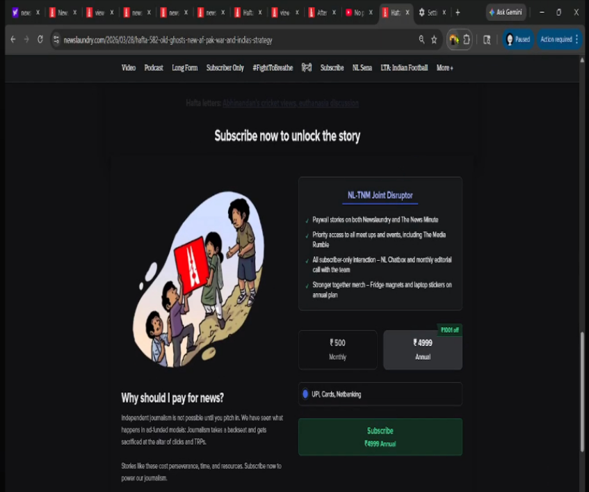
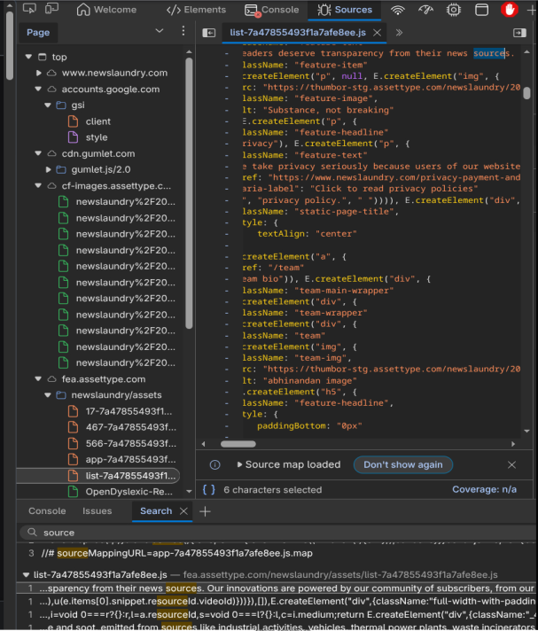
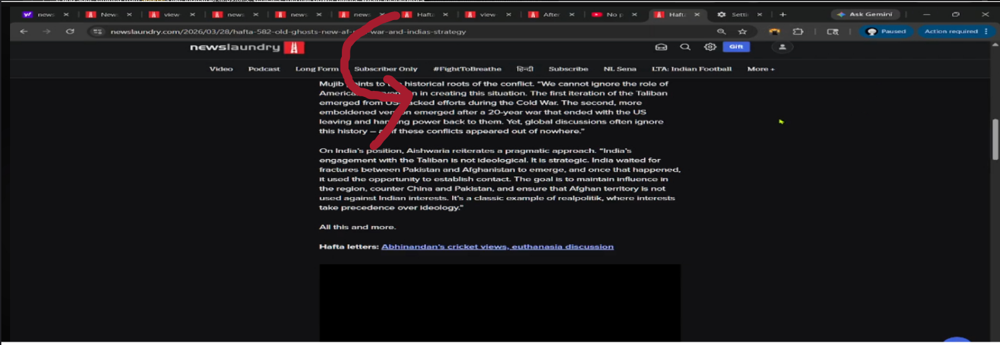
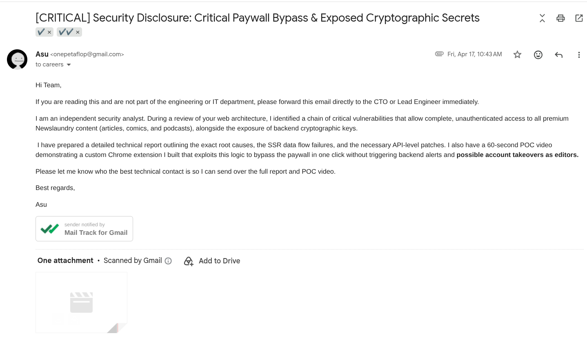
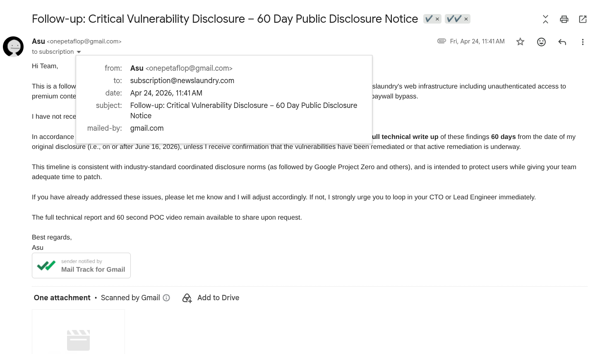
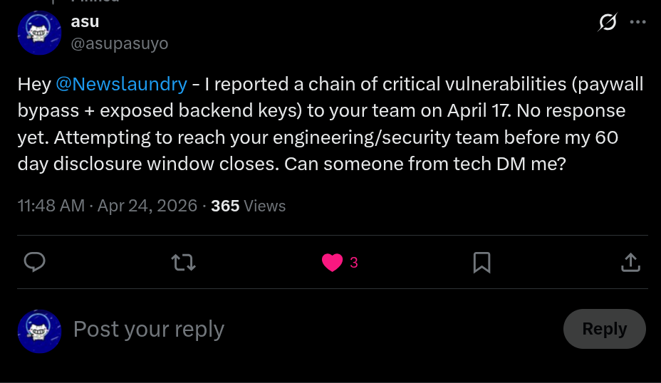

Newslaundry Paywall Bypass via Redux State Injection and Hardcoded AES Key
more research and writeups on github.com/asucodesthe paywall was never enforced on the server. the backend sent the complete article text, youtube ids, and podcast urls on every request because the content was needed for seo bots and server-side rendering. the react frontend simply looked at a redux flag called fetchSubscription.isActive and decided whether to render the truncated preview or the full piece. once the page had loaded, the entire premium payload was already resident in the browser's memory.
i spotted this while inspecting the initial html response. the window.__INITIAL_STATE__ object already contained the full cards, the youtube video identifiers, and the podcast stream urls. there was no jwt claim check on the node backend before it serialized that state. anyone who could read the page source or intercept the first network response already had access to the premium material.

the actual bypass was only about ten lines of javascript. you hook into the react root, inject a fake member object so the early null checks pass, then dispatch the precise redux action the store expects when a subscription becomes active. the paywall component re-renders immediately and the full text, podcasts, and videos appear with no additional network requests and no anomalous logs on the server side.
(function() {
const root = document.querySelector('#container') || document.querySelector('#app');
const fiberKey = Object.keys(root).find(k => k.startsWith('__reactContainer'));
const store = root[fiberKey].child.memoizedProps.store;
if (!store.getState().member) {
store.getState().member = { id: "audit_999", email: "audit@local.host" };
}
store.dispatch({
type: "USER_SUBSCRIPTION_RECEIVED",
isActive: true,
isRecurring: true,
isExpired: false,
items: [{ active: true, id: "audit_sub_999", plan_occurrence: "recurring" }]
});
})();
after proving the concept in devtools i built a small chrome extension that injects the identical payload with a single toolbar click. one press and the paywall drops on the live site. the sixty-second video shows the extension working against a real production haffa article with no authentication.
poc video (60s) — the extension running against the real site with no auth.
the key that should not have been there
while i was mapping the frontend i also pulled the production source maps, which were being served publicly. that turned the minified bundle back into readable react source in a single step. inside the api.js file there was a function that encrypted payloads for a discord linking endpoint using a symmetric key that was hardcoded directly in the client bundle.
export function linkDiscordAccount(body) {
const strObj = JSON.stringify(body);
const enc = CryptoJS.AES.encrypt(strObj, "hackmeNowLOL12345"); // CRITICAL: Hardcoded Secret
...
}
a symmetric aes key sitting in plaintext in production javascript. the obvious and serious escalation path is that the same secret, or one derived from the same pattern, might have been reused for signing jwts or managing sessions elsewhere. combined with the source maps and the unauthenticated author enumeration endpoint, an attacker would have had everything needed to mint tokens for editors and staff.


disclosure
the first report went to subscription@newslaundry.com on 17 april 2026. it included the full technical write-up and a sixty-second proof-of-concept video. the subject line was marked [CRITICAL] and explicitly asked the recipient to forward it to the engineering or security team immediately.

there was no meaningful reply. on 24 april i sent the sixty-day public disclosure notice follow-up and posted publicly on x tagging the account. an informal acknowledgement eventually arrived through a whatsapp contact inside the organisation, but there was never an official patch timeline, request for additional details, or cve.


the third and final notice went out in june. the sixty-day mark passed with the issues still present in production. this disclosure followed the same coordinated timeline norm used by google project zero. the full report pdf with all the attached screenshots and the video are exactly what was sent to them.
what should have happened
authorization decisions for premium content need to be enforced on the api responses themselves, not inside the client. the node backend should have inspected the accesstype_jwt claims before deciding which fields to include in the initial hydration state and which cards to return from the stories endpoint.
the hardcoded aes key should never have left the server. if client-side encryption was genuinely required for the discord linking flow, it should have been session-specific or based on a public-key scheme. production source maps should have been disabled or protected behind authentication, and the author enumeration endpoint should have required authentication or at minimum should not have returned internal ids and email addresses in bulk.
none of those controls were in place when i looked.